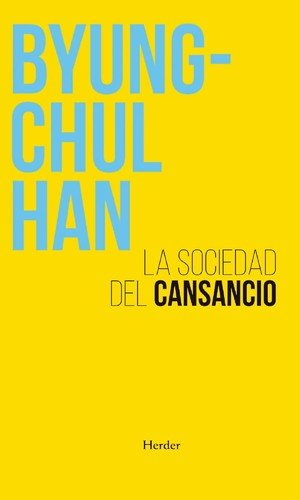

La sociedad del cansancioByung-Chul Han

La sociedad del cansancio
Byung-Chul Han
Ensayo breve sobre cómo la exigencia de rendimiento y la autoexplotación producen agotamiento, depresión y burnout en la sociedad actual.
- Ficha bibliográfica
- Open Library
Este libro tiene derechos de autor, así que no lo alojamos. Te dejamos la ficha para que sepas de qué trata y lo busques en una librería o biblioteca.